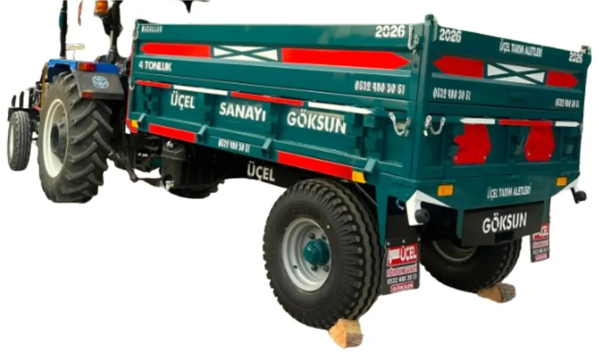
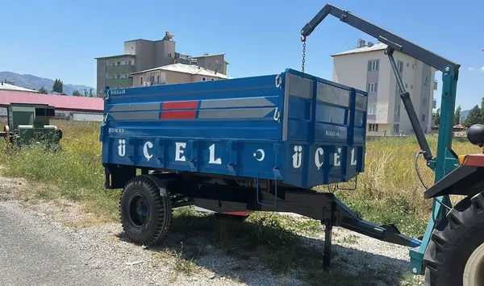
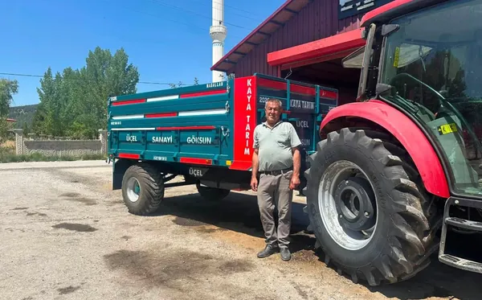

Taşıma · Kendi imalatımız
Tarım Römorku
Ürününüzü, yeminizi, odununuzu tek römorkla taşıyın.
Tarladan eve, depodan tarlaya yük taşımanın temel ekipmanı. Kaynağından boyasına kadar Göksun'daki atölyemizde üretiyoruz.
- Tarla ürünü
- Gübre ve yem
- Odun ve malzeme
- Hayvancılık
Kimler için? Ürün taşıyan, hayvancılık yapan, gübre ve yem nakli olan ya da genel taşıma ihtiyacı olan çiftçiler için.
Fiyat ve uygun modelBize üç şey yazın: Traktörünüz (marka / model) · Beygir gücü (HP) · Yapacağınız iş
Neden Üçel? · Seçenekler
- Kaynağından boyasına kadar atölyemizde üretiyoruz.
- Kasa rengini ve yazısını isteğinize göre yapıyoruz.
- Standart dışı ölçüde özel imalat yapabiliyoruz.
Seçenekler
- Kasa rengi size özel
- Kasaya isim, firma adı ya da “Maşallah” yazısı
- Standart dışı ölçüde özel imalat


Ne taşıyacağınızı yazın, uygun römorku birlikte belirleyelim.